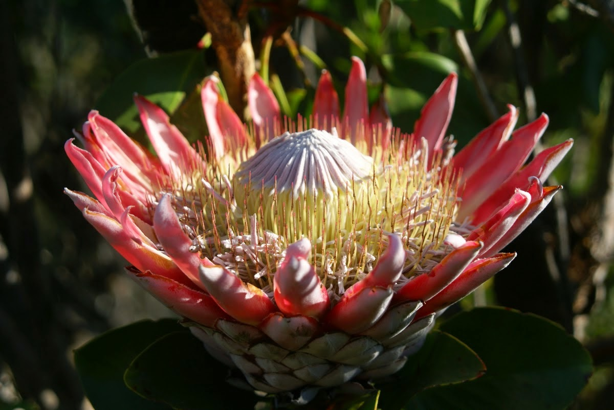
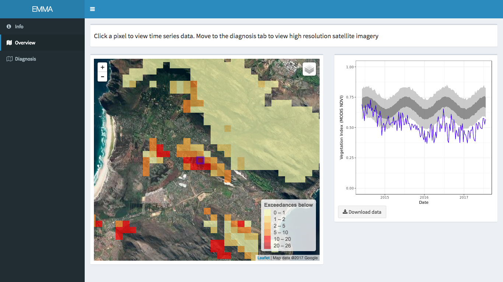

EMMA wins the UN Data for Climate Action challenge
Predicting post-fire recovery in the fynbos and monitoring vegetation anomalies.
The natural vegetation that grows around Cape Town, South Africa – the Cape Floristic Region (CFR) - is one of the richest repositories of plant life in the world. Here, about 20 percent of Africa’s flora grows in a landscape that accounts for less than 0.5 percent of the continent’s area. The diversity of plant life is among the highest on the planet. About 69 percent of the region’s estimated 9,000 plant species live nowhere else in the world.

But this flora is under severe pressure from a number of threats including climate change. Cape Town is currently experiencing its worst drought in living memory, with the city forecasted to run out of water by late autumn - before the winter rains arrive. This drought has been exacerbated by climate change, and ecologists suspect that vegetation is about to buckle under the pressure.
But suspicions are often all they have. The mountainous landscape and vast area make it practically impossible to manually assess the vegetation health of the entire area. This same problem is faced in the world’s forests. However, some amazing monitoring tools that use the rich satellite data made available by organizations like NASA and ESA are being used to assess the health of the world’s forests in real-time. Global Forest Watch is one such example.
The necessity to harness big data to contribute towards solving societies’ most pressing issues is obvious. To this end the Executive Office of the United Nations Secretary-General launched Global Pulse in 2009, in an attempt to bring real-time monitoring and prediction to development and aid programs.
Global Pulse runs innovation programmes partnering with organizations that own or have access to big data, data analytics technologies, and data science expertise. In 2017 they announced the Data for Climate Action Challenge – an innovation initiative aimed at bringing the brightest minds, best data, and cutting edge tools to address the most pressing environmental challenge of our age – climate change. And when I reflect on the potential destructive impacts of climate change, one of my first considerations is its effect on the natural world.
University of Buffalo ecologist Adam Wilson, ecologist Jasper Slingsby, at the South African Environmental Observation Network (SAEON) and myself recognized how a monitoring tool would be of use in the CFR, and how it could be complemented by the inclusion of data collected by the public. Building on earlier research by Wilson that describes how healthy vegetation ought to behave when using satellites to monitor vegetation activity, we submitted our idea to the Data for Climate Action Challenge.
Our submission included a lengthy description of how we envisage such a system to work, and a web app that allows users to view how the activity of natural vegetation as detected by satellites, compares to our prediction for healthy ecosystems. The mobile app allows citizen scientists to collect field data to aid in the assessment of our system’s accuracy.

The Data for Climate Action challenge selected 97 semi-finalist teams to develop projects using donated datasets and tools from 11 companies. Our system used high resolution satellite imagery from Planet Labs, social media data from Crimson Hexagon, cloud computing resources from Microsoft Azure and weather sensor data from Schneider Electric.
Our submission, the Ecosystem Monitoring and Management Application or EMMA, was selected as one of three thematic winners in the Data for Climate Action challenge. Adam Wilson traveled to Bonn, Germany to receive the award on November 12 at a companion event to the Sustainable Innovation Forum, a side event to COP23, the annual U.N. Climate Change Conference taking place from November 6-17.
I am very proud of my involvement in this project, and hope that this award and recognition of our tool will enable us to further develop our ideas into a fully fledged real-time monitoring system used by land management authorities and citizen scientists throughout the region, improving knowledge of climate change impacts on the Cape Floristic Region and aiding in species conservation.